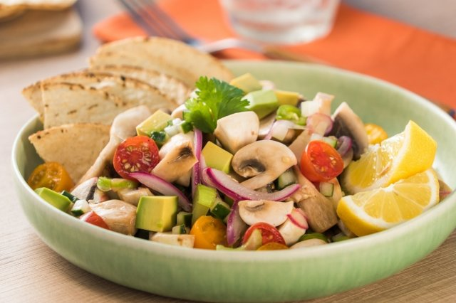

Ceviche de Champiñones
Delicioso y fresco ceviche de champiñones, la combinación perfecta para aquellos que quiere probar platos de verano y de la forma más saludable, vegana.
Ingredientes:
- • 200 gr de champiñones, limpios y laminados
- • 3 cebollines picados en rodajas
- • 1 pimentón rojo, picado en cubos pequeños
- • 7 cucharadas de jugo de limón
- • 4 cucharadas de jugo de naranja
- • 4 cucharadas de aceite de oliva
- • Media cucharadita de jengibre molido
- • Sal de mar a gusto
- • Pimienta negra molida a gusto
- • 1 palta, picada en cubos
- • ½ taza de cilantro picado
Preparación:
- Mezclar los champiñones con los cebollines y cubos de pimentón. Agregar el jugo de limón, naranjas, aceite de oliva, jengibre, sal de mar, pimienta negra y revolver hasta tener todo integrado.
- Agregar la palta y cilantro, revolver con cuidado para no moler la palta.
- Servir en pocillos, acompañar con tostaditas si se desea.